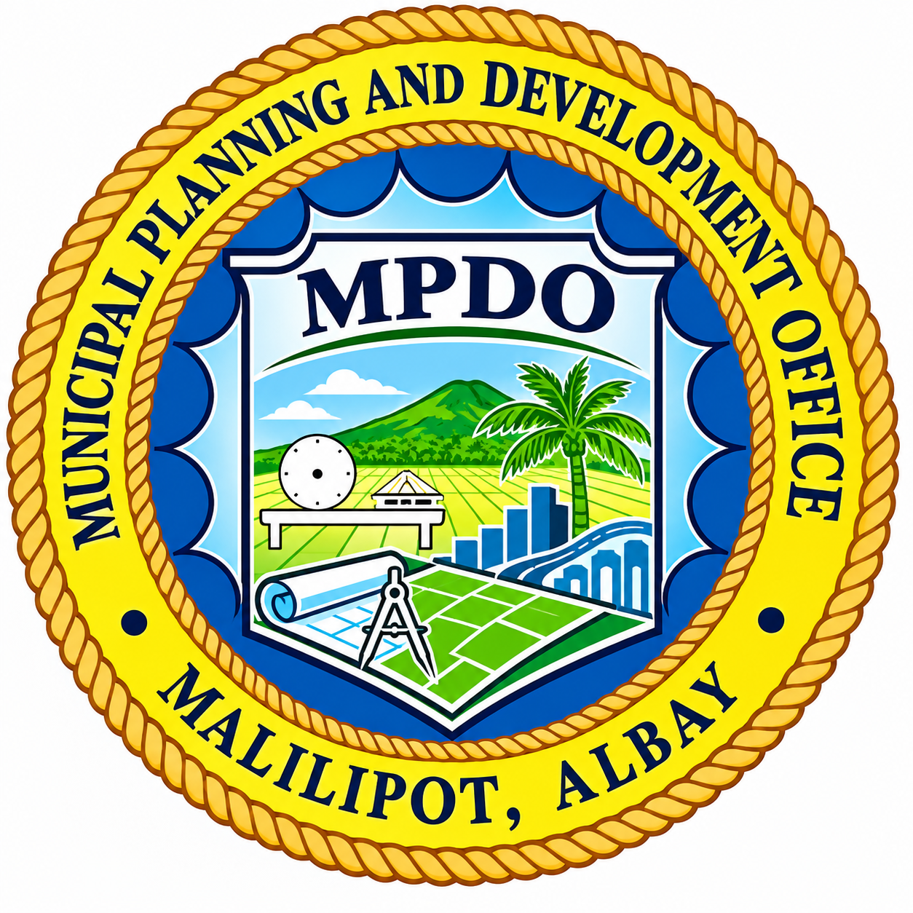

Infrastructure Projects
Project profiles and implementation information for public infrastructure initiatives.
PROJECT RECORDS TO BE ADDED
A public information space for municipal development initiatives, project profiles, and validated implementation updates.
This section is part of the initial MPDO Malilipot website release. Information and downloadable records will be added after verification and approval for public release.
Project profiles and implementation information for public infrastructure initiatives.
PROJECT RECORDS TO BE ADDEDPublic information about validated programs and projects supporting social development.
PROJECT RECORDS TO BE ADDEDInformation about approved economic development initiatives and activities.
PROJECT RECORDS TO BE ADDEDValidated environment, climate resilience, and disaster risk reduction initiatives.
PROJECT RECORDS TO BE ADDEDPublic summaries of project monitoring activities and accomplishments cleared for release.
MONITORING UPDATES TO BE ADDEDPhotographs and progress updates with verified dates, locations, and project descriptions.
PHOTOS TO BE ADDED